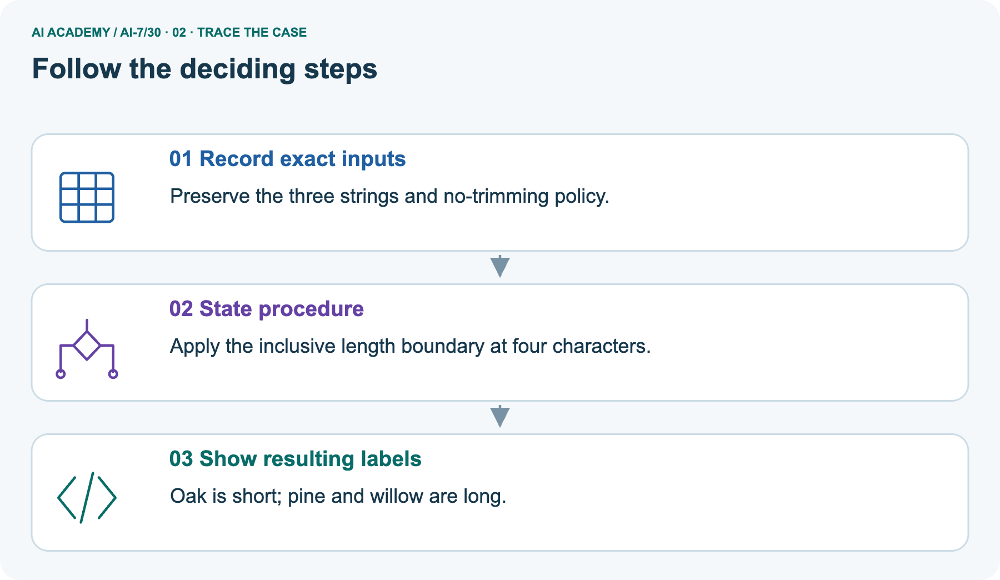
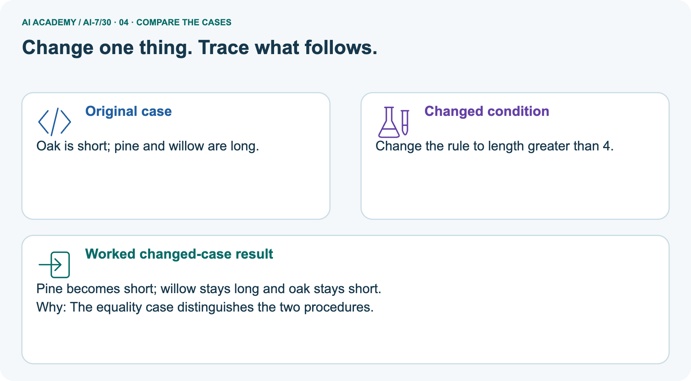
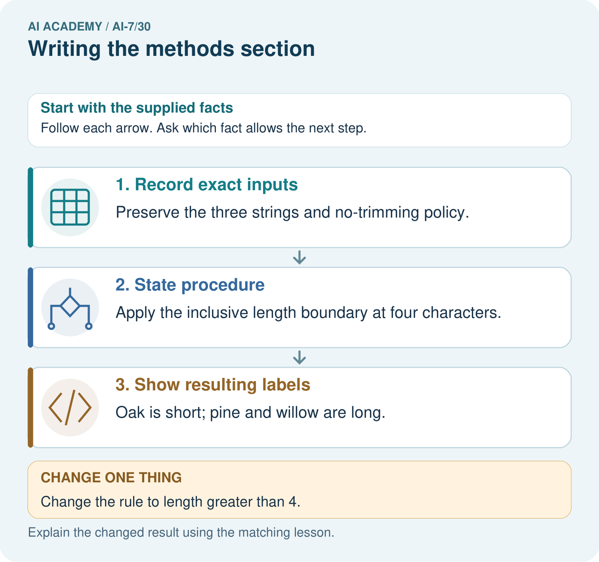
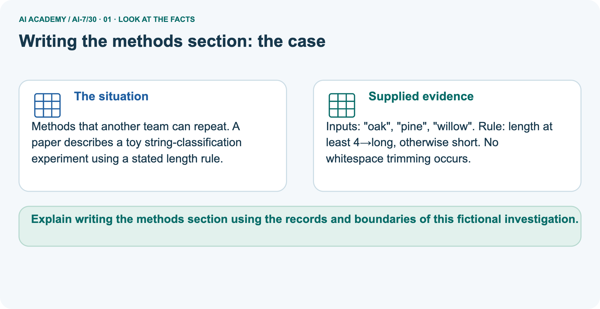
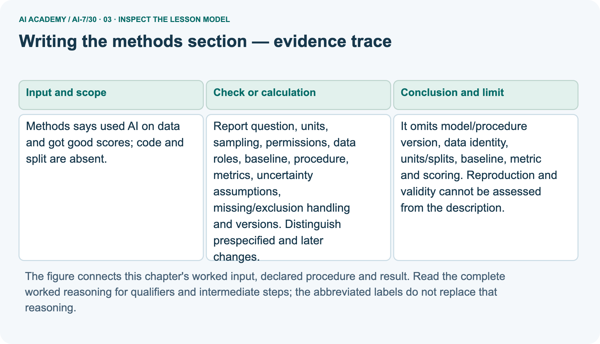
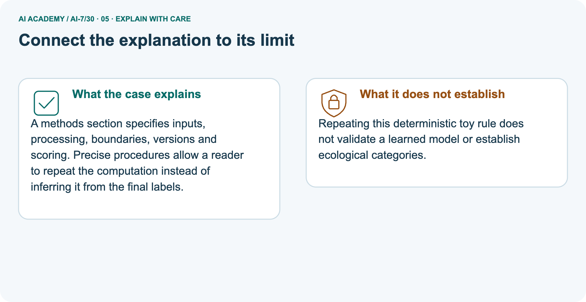
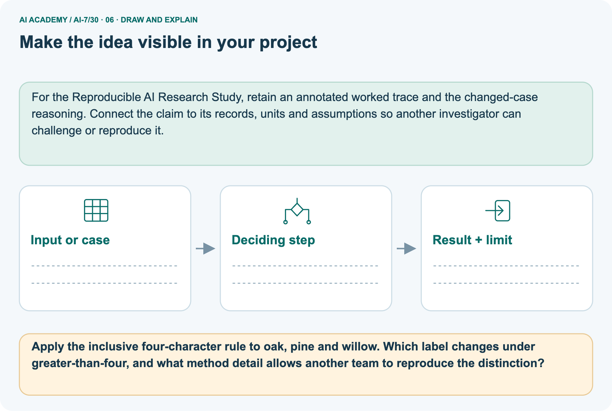

AI Academy · Level 7 · Grade 12 · Week 30 · Student lesson
Writing the methods section
Learn to understand, design, build, test and explain AI systems responsibly.
Project: Reproducible AI Research Study
THE CONNECTED WEEK
Write methods that expose the decisions affecting the evidence
Specify exact inputs, boundaries, data roles and versions while keeping unassessed design details explicit.
Keep one habit: Question and contract → complete main ledger → separate picture → boundary probes → investigation → independent attempt.
Main lesson · Section 1
Write methods that expose the decisions affecting the evidence
Specify exact inputs, boundaries, data roles and versions while keeping unassessed design details explicit.
Learning goals
I can explain the mechanism and terminology of writing the methods section.
I can apply the stated procedure to a new case with a traceable result.
I can identify an assumption or limitation and design a revealing follow-up.
Retrieve before reading
Close your notes first. A rough first answer helps us choose the right starting point; it is not a score for your ability.
Without opening the old lesson, explain one key idea from Figures that preserve evidence. Give an example and a mistake that the idea helps you avoid.
Without opening the old lesson, explain one key idea from Robustness across conditions. Give an example and a mistake that the idea helps you avoid.
Without opening the old lesson, explain one key idea from Reproducible environment and records. Give an example and a mistake that the idea helps you avoid.
After trying, check the relevant lesson or ask your teacher. Change the part of your explanation that the evidence shows was wrong.
Starting explanation
Recall Figures that preserve evidence. Explain why a recorded result needs its input conditions and evidence source before it can support a claim.
End goal
Explain writing the methods section using the records and boundaries of this fictional investigation.
Earlier wording, alternatives and picture transcripts
Your learning target
Remember before reading
This week you will practise:
Explain the mechanism and terminology of writing the methods section
Apply the stated procedure to a new case with a traceable result
Identify an assumption or limitation and design a revealing follow-up
Retrieve what you already know
This week’s end goal
Main lesson · Section 2
Understand the question and evidence contract
Specify exact inputs, boundaries, data roles and versions while keeping unassessed design details explicit.
Start with the research problem
“We used AI and got good scores” leaves the reader guessing which model, inputs, split and scoring rule produced the result. A useful methods section supplies the decisions needed to reconstruct the design and computation. Detail matters when it changes the evidence: which sources cross a split, how text is preprocessed, what counts as success and how missing results are handled.
Do not invent those details when auditing a report that omits them.
Original concept explanation
A methods section should let a reader reconstruct the design and computation. Detail should explain choices that affect evidence.
Complete case inputs, rules and limits
| Methods item | Complete supplied exercise contract |
|---|---|
| Main description | Used AI on data and got good scores; code and split absent |
| Missing main identifiers | Model/procedure version, data identity, units/splits, baseline, metric and scoring |
| Other required design reporting | Sampling, permissions, data roles, uncertainty assumptions, exclusions and deviations |
| Separate toy inputs | Exact strings oak, pine, willow |
| Original toy rule | Length at least four characters means long; otherwise short |
| Preprocessing | No whitespace trimming; supplied strings are ASCII |
| Changed rule | Strictly greater than four |
| Scope | Repeatable toy computation, not a learned model or biological classification |
Name given and missing evidence
Earlier wording, alternatives and picture transcripts
Begin by writing the question the procedure is intended to answer. Identify the information already supplied, the information it will produce and the information still missing.
These are constructed classroom examples; they do not require live accounts, private records or an external service. Do not treat a plausible explanation as a measured outcome.
Main lesson · Section 3
Trace the complete main case before interpreting it
Follow each evidence-to-conclusion step and retain unknown quantities.
Original declared procedure
Report question, units, sampling, permissions, data roles, baseline, procedure, metrics, uncertainty assumptions, missing/exclusion handling and versions. Distinguish prespecified and later changes.
Complete main-case evidence ledger
| Main report omission | Why it affects assessment | What the audit should request |
|---|---|---|
| Model/procedure version | Which system produced the result is unknown | Exact version/configuration and code |
| Data identity and split | Cases, roles and source overlap unknown | Identifiers, eligibility and grouping/split rule |
| Baseline | Comparison target unknown | Baseline procedure and matched conditions |
| Metric and scoring | Good scores has no defined denominator/rubric | Explicit outcome, calculation and raw counts |
| Missing/exclusion handling | Reported cases may be selected | Rules, excluded/unassessed counts and deviations |
| Validity conclusion | Cannot assess from this description | Record missing evidence rather than fabricate a complete method |
State the scope and explain the visual
Before applying the procedure, write its units, denominator or decision boundary where relevant. A partner should be able to repeat each step using the same inputs.
If a required input is absent or violates the stated contract, record that condition explicitly instead of quietly replacing it with a convenient value.
Point to the input, the deciding step and the result in this week’s visual. Explain the same step in ordinary words. A picture helps when you can say what each part represents.
Earlier wording, alternatives and picture transcripts
Writing the methods section — evidence trace
Connect the picture and the explanation
Main lesson · Section 4
Predict the changed case before reading the explanation
Keep the rule and evidence boundary visible.
Main task and response
Methods says used AI on data and got good scores; code and split are absent. Show the intermediate steps and give the conclusion with its scope.
Predict the pictured change
Change: Change the rule to length greater than 4.
Check after predicting
Prediction: Pine becomes short; willow stays long and oak stays short.
Reason: The equality case distinguishes the two procedures.
Earlier wording, alternatives and picture transcripts
Compare a familiar case with a changed case
Change one thing in the pictured case
Main lesson · Section 6
Connect the main result with the separate pictured case
Keep the two scenarios and their supplied evidence distinct.
Main case and original checked reasoning
Methods says used AI on data and got good scores; code and split are absent.
It omits model/procedure version, data identity, units/splits, baseline, metric and scoring. Reproduction and validity cannot be assessed from the description.
Compare the intermediate evidence with the final statement. Explain why each number or decision follows from the stated inputs.
The conclusion belongs to this scenario and procedure; changing the inputs, evaluation population or authority can change what it establishes. Retain the raw record so a later revision can be compared honestly.
Separate pictured inputs and complete explanation
Methods that another team can repeat. A paper describes a toy string-classification experiment using a stated length rule.
Inputs: "oak", "pine", "willow". Rule: length at least 4→long, otherwise short. No whitespace trimming occurs.
The separate toy method supplies exact strings and a rule, not a learned model. With no trimming, oak has three characters and is short; pine has four and is long; willow has six and is long under length at least four. Changing the condition to strictly greater than four changes only pine to short.
The whitespace probe oak followed by one space has four characters under this method and therefore is long; silently stripping it would change the procedure. Long and short are arbitrary string-length categories, not ecological properties. Repeating this computation does not fill in the main report’s missing AI materials.
Read the labelled representation




Read the picture one step at a time
A methods section specifies inputs, processing, boundaries, versions and scoring. Precise procedures allow a reader to repeat the computation instead of inferring it from the final labels.
Complete picture evidence and limits
| Exact toy input | Character count | Length ≥ 4 | Length > 4 |
|---|---|---|---|
| oak | 3 | short | short |
| pine | 4 | long | short |
| willow | 6 | long | long |
| oak followed by one space | 4, because no trimming | long | short |
| Why labels differ | Boundary or preprocessing changed | Record exact method | Preserve original and revised versions |
Predict the changed condition
Change one thing: Change the rule to length greater than 4. Predict the result before checking the explanation. What remains the same?
Check after predicting



Explain what remains unknown
Repeating this deterministic toy rule does not validate a learned model or establish ecological categories.
Read the labelled picture: Apply the inclusive four-character rule to oak, pine and willow. Which label changes under greater-than-four, and what method detail allows another team to reproduce the distinction?
Earlier wording, alternatives and picture transcripts
Learn from the worked case
Cover the result before checking it. Say what is given, choose the procedure, and follow one step at a time. Then uncover the result and explain your first mismatch. Ask why a step is allowed, not only what number it produces.
A pictorial worked case: Writing the methods section
The facts we will use



Why this result follows
What this example does not establish
Main lesson · Section 7
Find the first unsupported inference and repair it
Use the supplied conditions rather than inventing missing evidence.
Original qualification and repair setup
A detailed methods section can reveal limitations; it does not guarantee a correct design.
A useful check asks what would make the reasoning fail. Distinguish a failure to execute the declared procedure from a weakness in the procedure itself.
The first may require a correction; the second requires an explicitly revised method and new evidence. Preserve unsuccessful cases so an improved result cannot hide the original problem.
Complete boundary and misconception probes
| Methods audit | Checked interpretation |
|---|---|
| Dataset named | Still need units, eligibility, roles and split/grouping rule |
| Metric named | Still need scoring boundary, denominator and missing handling |
| Near-duplicate sources across split | Can undermine evaluation independence; inspect group identities and allocation |
| At least four versus greater than four | Different method; pine is the boundary case |
| Whitespace trimming added silently | Changes the stated procedure |
| Code reproduces toy labels | Not evidence about a learned model |
| A long methods checklist is filled | Does not prove records are true or assumptions valid |
| Detail absent | Mark unknown; request evidence rather than guessing |
Write and justify the repair
A report omits this qualification: A detailed methods section can reveal limitations; it does not guarantee a correct design. Explain how omitting it could change a reader's interpretation, and write an accurate replacement.
Earlier wording, alternatives and picture transcripts
Locate the earliest unsupported step
Main lesson · Section 8
Practise the mechanism with progressively less help
Keep the selected independent case for a first attempt.
Shared explanation
Explain the weekly mechanism in your own words. Use the worked scenario to name its input, decision rule and output.
Supported workbook trace
Use workbook W2 for the connected example “Writing the methods section”. First fill the input and rule boxes. Try the middle steps before asking for a hint. After a hint, try the next step yourself.
| Plan | Do | Check |
|---|---|---|
| What is given? Which rule or procedure applies? | Record each intermediate step. | Does the result follow? What remains unknown? |
Explain your trace to a partner. Your partner points to one step to check. Swap roles on the next case. Each person writes their own explanation.
Individual scope check
Use the worked case for Writing the methods section. Proposed explanation: “The worked result establishes every future case”. Decide whether this explanation is supported.
Point to the step or supplied fact that decides; explain your repair if needed.
Answer on your own before discussion. If you are unsure, say which step you need help with.
Picture response
Apply the inclusive four-character rule to oak, pine and willow. Which label changes under greater-than-four, and what method detail allows another team to reproduce the distinction?
Reserve the independent task
This is supported practice. Keep the separately named independent case for an attempt before feedback.
Earlier wording, alternatives and picture transcripts
Practise with less help: Trace the worked case
Check your reasoning
Explain the picture
Main lesson · Section 9
Investigate, record the evidence and check the limits
Distinguish a prediction, a paper trace and an actual local execution.
Current investigation
Methods says used AI on data and got good scores; code and split are absent. Show the intermediate steps and give the conclusion with its scope.
Complete investigation instructions
Audit the vague AI report on paper and list the missing identifiers, data roles and scoring rules. Separately predict all three toy labels, then run or trace the full local length-rule code. Check the inclusive/strict boundary and the explicitly supplied trailing-space probe without changing the recorded input. Save original and changed outputs with their rule definitions.
This calculation does not train a model, evaluate botanical categories or reconstruct the absent AI experiment. Keep the independent near-duplicate split scenario for a first attempt.
"""Repeat an explicitly specified ASCII string-length rule; no trained model."""
def labels(strings,strict=False):
if not isinstance(strings,(list,tuple)) or any(not isinstance(s,str) for s in strings) or type(strict) is not bool:
raise ValueError('string sequence and Boolean boundary flag required')
return [{'input':s,'character_count':len(s),'label':'long' if (len(s)>4 if strict else len(s)>=4) else 'short'} for s in strings]
inputs=['oak','pine','willow'];original=labels(inputs);changed=labels(inputs,True)
assert [r['character_count'] for r in original]==[3,4,6]
assert [r['label'] for r in original]==['short','long','long']
assert [r['label'] for r in changed]==['short','short','long']
assert labels(['oak '])[0]['label']=='long' # No whitespace trimming under this method.
assert inputs==['oak','pine','willow']
print('Original explicit inclusive length rule:',original)
print('Changed strict greater-than-four rule:',changed)
print('Whitespace boundary probe:',labels(['oak ']))
print('Method: Python len on the supplied ASCII strings, no stripping or preprocessing. Long is an arbitrary string-length label, not botanical meaning.')
print('This demonstrates repeatable computation only. It supplies no missing code/data/split for the main AI report, no learned-model evidence and no independent study reproduction.')
Evidence record and reflection
| Record | Your evidence |
|---|---|
| Given input and fixed rule | |
| Prediction before checking | |
| Actual result, or “not run” | |
| First mismatch and one explanation | |
| Boundary or missing input and expected response |
On paper, trace the supplied procedure. If code is provided, predict before running it in a local practice file. Never write an expected answer as though it were an observed run.
Before trying: what do I expect, and why? While trying: which step could first go wrong? Afterwards: what did I actually observe, and what should change? Keep “not run” if you only traced the procedure.
Earlier wording, alternatives and picture transcripts
Predict, investigate and preserve the evidence
Plan → try → check
Main lesson · Section 14
Try the selected new case independently
Identify the grouping and split-allocation details needed to assess whether near-duplicate sources cross evaluation roles.
Complete independent task
Methods names a dataset and metric, but not whether near-duplicate sources cross the split. What detail matters?
First attempt and support record
Attempt this case before feedback. Record any help. Earlier examples below are further practice; a case already practised with feedback cannot establish fresh transfer.
Feedback after trying
Attempt the independent case before hints. Record whether you worked alone, used a hint or followed a model. After feedback, fix the first unsupported step and explain why it changed.
A later check uses a changed case, not a copied answer.
Earlier wording, alternatives and picture transcripts
Independent case: Apply a new case independently
Attempt this without hints
Methods names a dataset and metric, but not whether near-duplicate sources cross the split. What detail matters?
Record support used: none, hint or teacher explanation. After feedback, a different case is needed to demonstrate independence.
Use feedback to improve
Main lesson · Section 11
Save the research artifact and unresolved conditions
Keep supplied evidence, proposed revisions and actual work distinct.
Project task and artifact
Add a labelled writing the methods section evidence sheet to Reproducible AI Research Study. Show how you can explain the mechanism and terminology of writing the methods section.
Use the supplied fictional case and keep its inputs, intermediate steps, calculation or prediction, and limitation. Connect this record to last week’s record; a matching answer without a trace is insufficient.
| Project evidence | Record |
|---|---|
| Component and version | |
| Inputs permitted at prediction time | |
| Trace and comparison with earlier work | |
| Failure, limit and human review |
Evidence and limitations
For the Reproducible AI Research Study, retain an annotated worked trace and the changed-case reasoning. Connect the claim to its records, units and assumptions so another investigator can challenge or reproduce it.
Earlier wording, alternatives and picture transcripts
Evidence for your project
Main lesson · Section 16
Retrieve the mechanism and state the evidence boundary
Explain what follows and what would require new evidence.
Retrieve and explain
Close your notes. Explain this goal in your own words: Explain the mechanism and terminology of writing the methods section
Plan a changed-case return
If you are unsure, return to the worked picture and explain one arrow. If you are ready, change an input or assumption and justify your prediction.
Save your workbook evidence. At the next review, try a different case before opening your old answer.
Reference bank and extra practice
Choose the reference that helps your next step.
Reference · Use research vocabulary precisely
Reference · Section 5
Reference · Use research vocabulary precisely
Connect each term to the question, comparison, measurement or evidence.
Vocabulary and your explanation
| Word | Meaning |
|---|---|
| Methods section | The record of study design and computation |
| Design choice | A decision affecting what evidence means |
| Analysis assumption | A condition required by a statistical procedure |
Extra challenge · Explain a stronger case
Reference · Section 10
Extra challenge · Explain a stronger case
Choose the next challenge after the main route.
Explain,repair and extend
Explain the weekly mechanism in your own words. Use the worked scenario to name its input, decision rule and output.
A report omits this qualification: A detailed methods section can reveal limitations; it does not guarantee a correct design. Explain how omitting it could change a reader's interpretation, and write an accurate replacement.
For the worked scenario, propose one additional case that could reveal a failure, describe its expected outcome before running it, and explain what would need to remain fixed for a fair comparison.
Do not reuse W4 as a new final test after receiving feedback.
Explain → apply → challenge
Reference · Check the research reasoning and its limits
Reference · Section 12
Reference · Check the research reasoning and its limits
Use after practice; reserve the selected independent case for its first attempt.
Current explanation and response
Complete the supported workbook tasks before attempting W4 independently. Record any hints or help used. After feedback, use the teacher's fresh retry rather than copying the earlier answer.
For a project, select a relevant new case, predict the outcome from the declared rule and preserve the result alongside any revision.
For the worked scenario, propose one additional case that could reveal a failure, describe its expected outcome before running it, and explain what would need to remain fixed for a fair comparison.
Do not reuse W4 as a new final test after receiving feedback.
Extra practice · Revisit the complete trace
Reference · Section 13
Extra practice · Revisit the complete trace
Predict before reading the supplied steps.
Complete trace and evidence
Complete evidence record
Writing the methods section — evidence trace
Follow the input through the stated procedure to its result. Cover the result first, predict it, then explain every intermediate step. The text/table accompanies the figure so the example can be read without colour.
Reference · The earlier route checklist
Reference · Section 15
Reference · The earlier route checklist
Use one main route rather than repeating the lesson.
Targets,route and first prediction
Start with this question: Methods that another team can repeat. A paper describes a toy string-classification experiment using a stated length rule.
| By the end, I can | How I will show it |
|---|---|
| Explain the mechanism and terminology of writing the methods section | Explain the deciding step, show a trace or test, and state one limit. |
| Apply the stated procedure to a new case with a traceable result | Explain the deciding step, show a trace or test, and state one limit. |
| Identify an assumption or limitation and design a revealing follow-up | Explain the deciding step, show a trace or test, and state one limit. |
Remember → watch and explain → try with help → investigate → try independently → keep project evidence. Your teacher may spread this lesson across several classes.
Keep your first prediction. Compare it with what the evidence shows and explain any change.
Extra practice · Predict,check and repair
Reference · Section 17
Extra practice · Predict,check and repair
Keep supported feedback separate from the independent case.
First supported question and optional hint
Methods that another team can repeat. A paper describes a toy string-classification experiment using a stated length rule.
Which labelled step matches this detail? Oak is short; pine and willow are long.
1. State procedure
2. Record exact inputs
3. Show resulting labels
Hint if needed: Read the steps in the pictorial case. Match the supplied detail to the stage that performs or records it.
Practice 1: explain the deciding evidence
Check after the first attempt
After your attempt, compare with the supported explanation: Show resulting labels Oak is short; pine and willow are long. A methods section specifies inputs, processing, boundaries, versions and scoring.
Precise procedures allow a reader to repeat the computation instead of inferring it from the final labels.
Changed-case question and optional hint
Changed-case practice: Change the rule to length greater than 4. Which conclusion is supported by the supplied facts?
1. We can decide the result without examining the changed input or the procedure.
2. Pine becomes short; willow stays long and oak stays short.
3. This one example guarantees correct results for every future input.
Hint if needed: Use the changed condition and the deciding step in the pictorial trace. The answer must say what follows from those facts.
Practice 2: explain the deciding evidence
Check after the changed attempt
After your attempt, compare with the supported explanation: Pine becomes short; willow stays long and oak stays short. The equality case distinguishes the two procedures.
Repair and retain the record
Review Figures that preserve evidence (ai-7/29). Goal: Explain the mechanism and terminology of figures that preserve evidence. Short practice: Draw count bars for 6/10 and 8/10 using the stated axis.
Why must the denominator and fixed task context remain visible, and what distortion arises from an undisclosed axis start at five?. Return to this week and explain what you changed.
Review Robustness across conditions (ai-7/27). Goal: Explain the mechanism and terminology of robustness across conditions. Short practice: Calculate indoor, outdoor and combined rates.
Which relevant weakness disappears from view when only the combined rate is reported?. Return to this week and explain what you changed.
Review Reproducible environment and records (ai-7/24). Goal: Explain the mechanism and terminology of reproducible environment and records. Short practice: Trace the recorded mean for 2,4,6 and its changed result for 2,4,9.
Which artefacts must accompany the output so another team can identify the exact run?. Return to this week and explain what you changed.
Use Download completed work in the hosted lesson to export your answers, reflections, practice feedback and code-run evidence. Open the HTML copy to read or print it.
Drafts stay in this browser when storage is available; clear drafts on a shared device.
Earlier wording, alternatives and picture transcripts
Use this supported practice once, in the browser or on paper. Keep the reserved independent assessment for a separate first attempt before teacher feedback.
Repair a missing building block
Keep your completed work
Reference · Six-picture concept journey
Reference · Section 18
Reference · Six-picture concept journey
Choose the picture that supports the current explanation.
01. Writing the methods section: the case



Methods that another team can repeat. A paper describes a toy string-classification experiment using a stated length rule. Supplied facts: Inputs: "oak", "pine", "willow". Rule: length at least 4→long, otherwise short.
No whitespace trimming occurs.
Point to the given fact that matters most. Explain why it matters.
02. Follow the deciding steps
Record exact inputs: Preserve the three strings and no-trimming policy. → State procedure: Apply the inclusive length boundary at four characters. → Show resulting labels: Oak is short; pine and willow are long.
Point to each numbered stage and explain which recorded input it uses.
03. Writing the methods section — evidence trace



Writing the methods section — evidence trace.
Methods says used AI on data and got good scores; code and split are absent. | Report question, units, sampling, permissions, data roles, baseline, procedure, metrics, uncertainty assumptions, missing/exclusion handling and versions.
Distinguish prespecified and later changes. | It omits model/procedure version, data identity, units/splits, baseline, metric and scoring. Reproduction and validity cannot be assessed from the description.
Read the labels and values. Explain the relationship the model shows.
04. Change one thing. Trace what follows.
Original case: Oak is short; pine and willow are long. Changed condition: Change the rule to length greater than 4. Expected result: Pine becomes short; willow stays long and oak stays short.
Reason: The equality case distinguishes the two procedures.
Predict before checking the worked changed-case result. Name what changed and what the supplied facts allow you to conclude.
05. Connect the explanation to its limit



A methods section specifies inputs, processing, boundaries, versions and scoring. Precise procedures allow a reader to repeat the computation instead of inferring it from the final labels.
Limit: Repeating this deterministic toy rule does not validate a learned model or establish ecological categories.
Explain the case, then point to a limit on the claim.
06. Make the idea visible in your project



For the Reproducible AI Research Study, retain an annotated worked trace and the changed-case reasoning. Connect the claim to its records, units and assumptions so another investigator can challenge or reproduce it.
Draw your input, deciding step, result and limit. Supported question: Apply the inclusive four-character rule to oak, pine and willow.
Which label changes under greater-than-four, and what method detail allows another team to reproduce the distinction?
Draw your project trace and justify the deciding step using evidence.